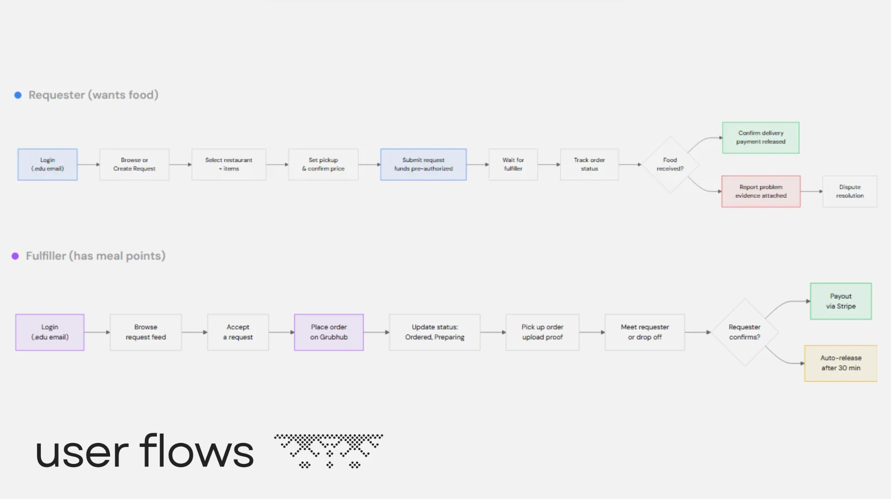
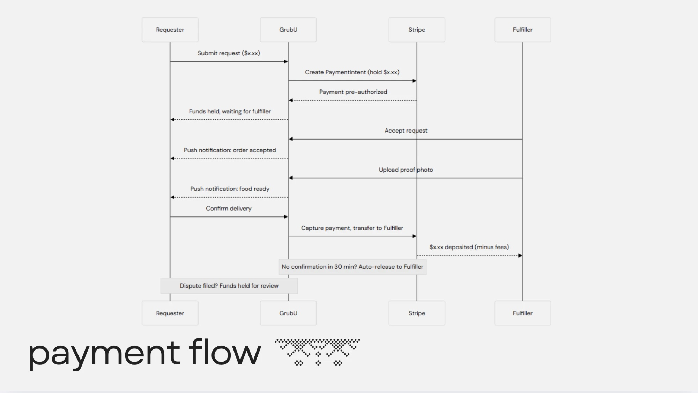
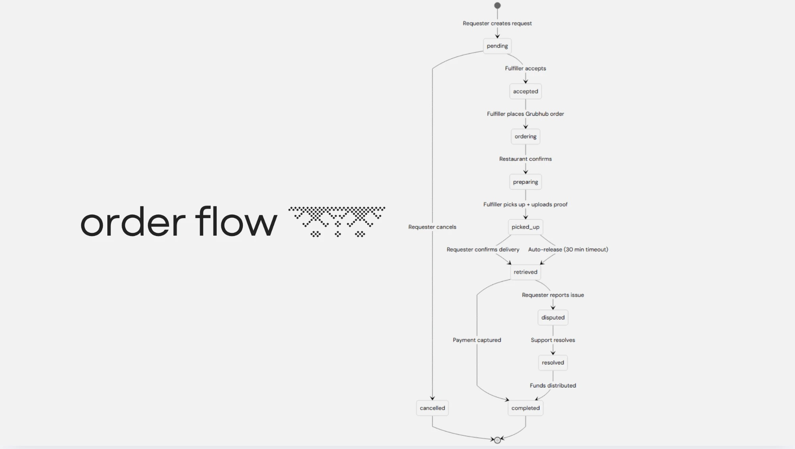

iOS app
GrubU
A campus marketplace where students with spare meal points order food for students who've run out, and get paid in cash.





Overview
At WashU, students can transfer at most 500 meal points per semester, so points can't easily move from the students who have too many to the students who don't have enough. Many students fall into one of two groups: those who run out and have to cook or pay for campus meals with real money, and those who finish with enough points for tens or hundreds of meals left unused.
GrubU connects the two. A student who's out posts a meal request and sets a price, and a student with spare points orders it on Grubhub and gets paid in cash.
Only verified .edu email addresses can sign up, so everyone on the app is a student.
What I built
- Two sides of one marketplace. In the Request tab, a student picks a restaurant, builds an order, pays and tracks it. In the Earn tab, another student browses open requests, accepts one and proves the order with the Grubhub order number and a screenshot.
- Escrow payments. When a student submits a request, Stripe pre-authorizes the payment and GrubU holds it. Once the requester confirms delivery, GrubU captures the payment and Stripe Connect transfers it to the fulfiller. If the requester doesn't confirm within 30 minutes, the payment releases automatically, and a disputed order keeps the funds on hold for review.
- Live order tracking. Each order follows a defined set of states (pending, accepted, ordering, preparing, picked up, retrieved and completed, with branches for cancellations and disputes). Firestore listeners update both students' screens, and push notifications go out at each step.
- Trust and safety. The server checks .edu emails, fulfillers upload photo proof of pickup, and requesters rate fulfillers from 1 to 5 stars. A problem report with attached evidence holds the funds until support resolves it, and SendGrid sends the support emails. The business logic runs in Firebase Cloud Functions.
Outcome
GrubU was my first time building a complete product around the people using it. I designed every screen from what a student on either side needs to do next: post a request, claim one, prove the order, get paid.
It also taught me how to handle other people's money. GrubU holds the requester's payment in escrow until they confirm pickup, and only then pays the fulfiller through Stripe Connect.